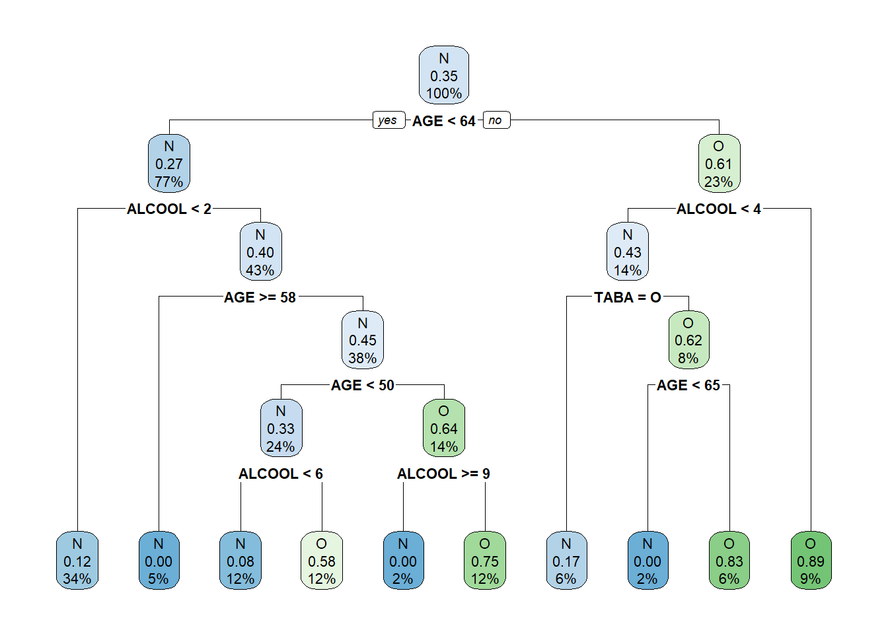
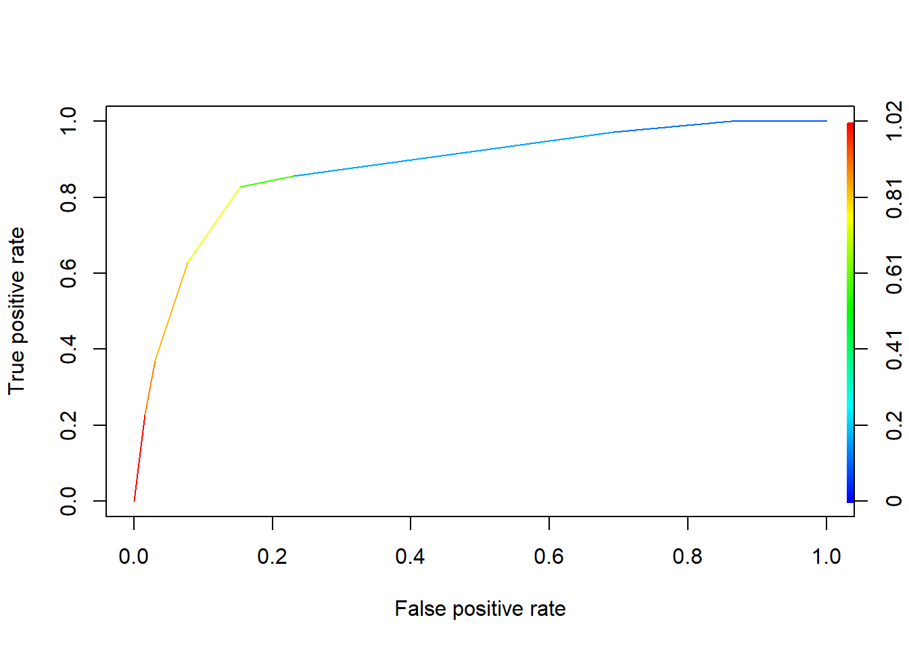

L’objectif de cette étude est de montrer les facteurs expliquant le fait qu’un individu ronfle.
summary(ronfle)## AGE POIDS TAILLE ALCOOL
## Min. :23.00 Min. : 42.00 Min. :158.0 Min. : 0.00
## 1st Qu.:43.00 1st Qu.: 77.00 1st Qu.:166.0 1st Qu.: 0.00
## Median :52.00 Median : 95.00 Median :186.0 Median : 2.00
## Mean :52.27 Mean : 90.41 Mean :181.1 Mean : 2.95
## 3rd Qu.:62.25 3rd Qu.:107.00 3rd Qu.:194.0 3rd Qu.: 4.25
## Max. :74.00 Max. :120.00 Max. :208.0 Max. :15.00
## SEXE RONFLE TABA
## Length:100 Length:100 Length:100
## Class :character Class :character Class :character
## Mode :character Mode :character Mode :character
##
##
## arbre.full <- rpart(RONFLE ~ AGE+ALCOOL+SEXE+TABA, data = ronfle, method = "class",minsplit = 5,cp=0.03)
print(arbre.full)## n= 100
##
## node), split, n, loss, yval, (yprob)
## * denotes terminal node
##
## 1) root 100 35 N (0.65000000 0.35000000)
## 2) AGE< 63.5 77 21 N (0.72727273 0.27272727)
## 4) ALCOOL< 1.5 34 4 N (0.88235294 0.11764706) *
## 5) ALCOOL>=1.5 43 17 N (0.60465116 0.39534884)
## 10) AGE>=57.5 5 0 N (1.00000000 0.00000000) *
## 11) AGE< 57.5 38 17 N (0.55263158 0.44736842)
## 22) AGE< 49.5 24 8 N (0.66666667 0.33333333)
## 44) ALCOOL< 5.5 12 1 N (0.91666667 0.08333333) *
## 45) ALCOOL>=5.5 12 5 O (0.41666667 0.58333333) *
## 23) AGE>=49.5 14 5 O (0.35714286 0.64285714)
## 46) ALCOOL>=9 2 0 N (1.00000000 0.00000000) *
## 47) ALCOOL< 9 12 3 O (0.25000000 0.75000000) *
## 3) AGE>=63.5 23 9 O (0.39130435 0.60869565)
## 6) ALCOOL< 3.5 14 6 N (0.57142857 0.42857143)
## 12) TABA=O 6 1 N (0.83333333 0.16666667) *
## 13) TABA=N 8 3 O (0.37500000 0.62500000)
## 26) AGE< 64.5 2 0 N (1.00000000 0.00000000) *
## 27) AGE>=64.5 6 1 O (0.16666667 0.83333333) *
## 7) ALCOOL>=3.5 9 1 O (0.11111111 0.88888889) *library(rpart.plot)## Warning: package 'rpart.plot' was built under R version 3.5.1rpart.plot(arbre.full)
pred <- predict(arbre.full, newdata = ronfle, type = "class")
mc <- table(ronfle$RONFLE,pred) #confusion matrix
print(mc)## pred
## N O
## N 55 10
## O 6 29err.resub <- 1.0 - (mc[1,1]+mc[2,2])/sum(mc)
print(err.resub)## [1] 0.16library(ggplot2)## Warning: package 'ggplot2' was built under R version 3.5.1library(ROCR)## Loading required package: gplots##
## Attaching package: 'gplots'## The following object is masked from 'package:stats':
##
## lowessmodele1.posterior<-predict(arbre.full,type='prob',ronfle)[,2]
modele1.posterior## 1 2 3 4 5 6
## 0.11764706 0.75000000 0.08333333 0.16666667 0.75000000 0.11764706
## 7 8 9 10 11 12
## 0.08333333 0.11764706 0.11764706 0.08333333 0.08333333 0.58333333
## 13 14 15 16 17 18
## 0.75000000 0.00000000 0.00000000 0.11764706 0.11764706 0.00000000
## 19 20 21 22 23 24
## 0.11764706 0.11764706 0.58333333 0.58333333 0.11764706 0.11764706
## 25 26 27 28 29 30
## 0.11764706 0.11764706 0.75000000 0.11764706 0.08333333 0.08333333
## 31 32 33 34 35 36
## 0.11764706 0.00000000 0.16666667 0.11764706 0.58333333 0.11764706
## 37 38 39 40 41 42
## 0.08333333 0.00000000 0.58333333 0.16666667 0.00000000 0.11764706
## 43 44 45 46 47 48
## 0.11764706 0.00000000 0.11764706 0.88888889 0.08333333 0.16666667
## 49 50 51 52 53 54
## 0.11764706 0.08333333 0.11764706 0.11764706 0.83333333 0.11764706
## 55 56 57 58 59 60
## 0.16666667 0.00000000 0.08333333 0.11764706 0.11764706 0.08333333
## 61 62 63 64 65 66
## 0.11764706 0.11764706 0.58333333 0.58333333 0.75000000 0.58333333
## 67 68 69 70 71 72
## 0.88888889 0.75000000 0.58333333 0.75000000 0.08333333 0.88888889
## 73 74 75 76 77 78
## 0.75000000 0.88888889 0.11764706 0.75000000 0.83333333 0.16666667
## 79 80 81 82 83 84
## 0.83333333 0.58333333 0.88888889 0.88888889 0.83333333 0.58333333
## 85 86 87 88 89 90
## 0.88888889 0.88888889 0.75000000 0.11764706 0.11764706 0.11764706
## 91 92 93 94 95 96
## 0.58333333 0.00000000 0.11764706 0.75000000 0.88888889 0.11764706
## 97 98 99 100
## 0.83333333 0.11764706 0.83333333 0.75000000modele1.pred<-prediction(modele1.posterior, ronfle[,6])
modele1.roc<-performance(modele1.pred, "tpr","fpr")
plot(modele1.roc,colorize=TRUE) 
modele1.auc<-performance(modele1.pred, "auc") ; modele1.auc@y.values[[1]]## [1] 0.8775824